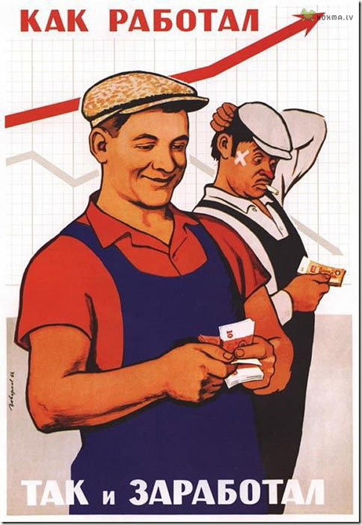

https://aftershock.news/?q=node/406454
Remixov
Экономическая диверсия при оплате труда в СССР
Сегодня трудно себе представить, что чуть больше полувека назад промышленное производство в стране по некоторым отраслям росло по 30% в год. Действительно, темпы были впечатляющими, поэтому у руководства СССР было полное основание полагать, что еще через пару лет можно будет перейти к 6-ти или даже 5-ти часовому рабочему дню.
И ведь страну строили не какие-там новые сорта людей (о выведении которых мечтают некоторые недокоммунисты), не гуманоиды из секретных советских лабораторий и не зэки из ГУЛАГа, которые, к слову, могли уменьшить срок заключения в 3 раза при ударном труде. Значит, все эти люди были вооружены инструментом такой эффективности, что будущее для них строилось прямо на глазах. А имя этому инструменту — сдельная оплата труда.

Для начала отметим важный факт, к 1953 году, т.е. к моменту смерти Сталина, 77% всех рабочих, занятых в промышленности находились на сдельной системе оплаты труда. Наиболее распространённой формой оплаты являлась прямая сдельная система заработной платы.
Существовала так же сдельно–прогрессивная оплата. Например, при перевыполнении рабочим установленной нормы от 1 до 5% сдельная расценка за перевыполненную норму выработки увеличивается на 30%, при перевыполнении нормы от 6 до 10% увеличивается на 60% и т. д. Наиболее возрастающая прогрессия в расценках устанавливалась для ведущих профессий, для рабочих, занятых на подземных работах, в горячих цехах, и для рабочих других видов тяжёлого труда.
Ну и, конечно же, существовала сдельно–премиальная система заработной платы, при которой прямая сдельщина дополнялась премиями за определённые показатели: за экономию топлива, электроэнергии, снижение себестоимости продукции, уменьшение брака, за повышение сортности изделия и т. д.
В тех случаях, когда по условиям производства невозможно применение индивидуальной сдельной оплаты (например, одновременное обслуживание несколькими рабочими крупной машины или агрегата), применялась бригадная, или групповая, сдельная оплата. Отдельные члены бригады получали свою долю от коллективного заработка с учётом отработанного каждым рабочим времени и квалификации работника.
Заметим важный фактор: параметры, по которым начислялась зарплата рабочим, были прямыми. Т.е. шахтеру платили за количество добытого угля, токарю — за количество и качество полученных деталей и т.д. Это правило было нарушено в позднем СССР, когда, например, доярке платили за количество и качество надоенного молока, но ведь от нее эти параметры не зависели! Эти факторы в первую очередь зависят от кормозаготовителя и ветеринара, и в меньшей степени — от самой доярки.
А самым главным вопросом в сдельной системе оплаты труды является то, каким образом повышались нормы. В сталинском СССР это происходило централизованно. Т.е. имелись данные по росту производительности по всей стране на однотипных предприятиях. Имея на руках цифры, можно было понять, насколько допустимо снижать расценки.
Например, на авиазаводе номер 1 в Кубышеве в 1953 году вспомогательные цеха выполнили следующий объем работ от нормированного №13 – 274%, №4 – 217%, №22 – 188%, №33 – 186%, №78 – 202%. Учитывая результаты и установив их причину, МАП в своем приказе №158 от 10.06.1953 г. пересмотрело и вновь повысило действующие нормы выработки по основному производству на 30%, по вспомогательному производству на – 33,4%.6. Заметим, что первые нормы устанавливались 06.02.1951г. и были пересмотрены через два года. Вывод: нормы повышались относительно мало, сделано это было спустя два года, нормы повышало само министерство.
Что же сделала партийная мафия после переворота 1953 года? Постаралась отменить сдельную оплату труда и максимально снизить расценки. Функции нормирования труда передали в ОТиЗ (отдел труда и зарплаты). Теперь нормы можно было поднимать на самом предприятии, т.е. локально, — так, как это захочется начальнику ОТиЗ. Раньше подобная самодеятельность приравнивалась к контрреволюционному преступлению, а организатор отправлялся в лагеря, теперь грабить рабочих можно было официально.
По этой причине цеховой персонал перестал работать сверх нормы. Рабочие знали, на какую величину можно было безнаказанно перевыполнять норму, чтобы обеспечить максимальную зарплату и в то же время не подвергнуться снижению расценок. Этот безопасный уровень выполнения норм зависил от отраслевых особенностей и традиций данного предприятия, чаще всего он колеблется около 120–130%. Если сделаешь больше, то в этом месяце и заработаешь больше, но потом норма будет повышена, причем для всех рабочих, выполняющих ту же операцию. Диверсия, самая настоящая! Мало того, что норму значительно повысят для всех, так сделают это в следующем месяце. Дичь полная.
А вот к чему это приводило на практике: «Из интервью с работницей кожевенно-обувного предприятия, которая оказалась виновницей пересмотра норм: „Я знаю, что больше 160 рублей зарабатывать не разрешают, говорят, 200 рублей — это мужская зарплата, а не женская. Но летом народа было мало, и мастер просила меня поработать побольше. Я получила два месяца по 240 рублей, а потом нормы пересмотрели“» В Хрущевско-Брежневском СССР стахановец — враг трудового коллектива, из-за таких, как он, рабочие становились бы беднее с каждым месяцем.
Кроме прочего, перестало цениться мастерство рабочих. Цитата из книги "Основы монтажа и эксплуатации электрооборудования промышленных установок", М-Л 1961, стр. 562—563:
«В связи с переходом в 1960 г на новый, 6-разрядный, тарифно-квалификационный справочник (ранее была 7-разрядная сетка), значительно повышен удельный вес тарифной ставки в заработке монтёра. Если раньше удельный вес тарифной ставки составлял менее 50% заработка, то в настоящее время он составляет около 85% заработка. Кроме того, при введении нового тарифно-квалификационного справочника, уменьшено соотношение между ставкой высшего и низшего разрядов. Так, если раньше соотношение между ставкой 7-го и 1-го разрядов составляло 2,8, то по новому тарифно-квалификационному справочнику это соотношение между ставкой 6-го и 1-го разряда равно 2».
Срезали разрядность, срезали расценки, срезали премии, ужимали квалификационную разницу в оплате, и перевели со сдельной оплаты на тарифную.
Однако самая важная диверсия произошла в системе оплаты труда инженерных и научных работников. Если раньше существовала так называемая система МПЭ (по Торгашеву), то в 1956 году ее отменили. Суть предложенного метода заключалась в разделении любой коллективной деятельности на плановую и сверхплановую. Плановая деятельность заключается в выполнении определенного объема работ в заданные сроки. За плановую деятельность работник получает ежемесячную или еженедельную зарплату, величина которой зависит от его квалификации и стажа работы по специальности. (Старший инженер, например, 1500, в месте с премиями в месяц выходило около 2500 рублей).
Для статистики
«Заработная плата рабочих в 1953 г. колебалась от 800 до 3000 и выше рублей, что говорит об отсутствии в то время уравниловки. Шахтёры и металлурги-стахановцы получали в то время до 8000 руб. в месяц. Заработная плата молодого специалиста-инженера составляла 900-1000 рублей, старшего инженера — 1200-1300 рублей.
Секретарь райкома КПСС получал 1500 рублей в месяц. (Сравните разницу со стахановцами)
Оклад союзного министра не превышал 5000 рублей, зарплата профессоров и академиков была выше, нередко превышая 10000 рублей. Реальные доходы трудящихся выросли в сравнении с 1913 г. в 4 раза, а с учётом ликвидации безработицы и сокращения рабочего дня — в 5 раз.
За перевыполнение плана (количественных, качественных характеристик) разработчики получали премию, которая равнялась в среднем 2% от общей стоимости заказа. А стоимость заказа могла составлять миллионы рублей, представьте себе заработки. Деньги между коллективом делились по системе баллов, где за изобретение давали 5 баллов, рац. предложение — 3 бала, руководителю изначально 5 баллов, заму — 3, рядовому сотруднику 1 и т.д.
Для ликвидации МПЭ, которое произошло в 1956 году, не пришлось прикладывать особых усилий. Просто при финансировании ОКР и НИР были отменены любые фонды оплаты труда, как премиальные, так и обычные. И сразу теряли смысл премиальные шкалы, временные коллективы и баллы. А у производственных предприятий из плановых показателей было исключено снижение себестоимости, и, соответственно, исчезала возможность создания премиального фонда для совершенствования технологий, да и никакого стимула для этого совершенствования уже не было. Одновременно были введены лимиты на величину вознаграждений за рационализаторские предложения и изобретения. Последний пункт — вредительство в чистом виде.
Уничтожение системы поощрения труда коснулось всех категорий трудящихся. Более того, теперь рабочий имел очень мало возможностей по повышению эффективности производства. Вспомним Стаханова. Что он предложил? — Спецализацию и делегирование труда на шахте. Один человек рубил уголь, другой — устанавливал опоры, третий — увозил уголь и т.д. В итоге производительность на коллектив выросла более чем на 300%. Начальник шахты, пославший Стаханова куда подальше с его рационализаторским предложением, в итоге сам вскоре поехал в лагеря, представить себе что-то подобное в хрущевском СССР и тем более в брежневском было невозможно.
Хуже всего то, что теперь властные полномочия по большей части сосредотачивались в руках партийной мафии КПСС. Теперь для внедрению серьезных рационализаторских новшеств требовалось одобрение парткома. Но эти люди часто даже не имели высшего образования. В итоге тупицы теперь советовали дояркам, как доить коров, агрономам — когда сеять зерно, а механикам — как чинить трактора.
Заметим, что идею уравниловки при оплате труда взялась не с потолка. Ее продвигал Л. Д. Троцкий. Здесь вы можете прочитать об этом подробней.
Вывод. После переворота 1953 года и приходом к власти партийной мафии КПСС, исповедовавшей троцкистские учения, в стране началось преднамеренное уничтожение народного хозяйства. Работа сверх нормы была экономически наказуема. Принятие важных производственных решений было замкнуто на безграмотных партийных функционерах на всех уровнях, которые ни коем образом не отвечали за свои действия. Социализм умер вместе со Сталиным, а ему на смену пришла эпоха госкапитализма.
-------------------------------------------------------------------------------------
Список использованных источников
- Торгашев. Вспоминая СССР, часть 1
- Торгашев. Вспоминая СССр часть 2
- ПРАВДА О ЖИЗНИ СОВЕТСКОГО НАРОДА В СССР
- Русская модель управления Прохоров А.В.
- Политическая экономия. Учебник » Раздел третий. Социалистический способ производства Глава XXXII
- Статья. К вопросу о роли нормирования труда и заработной платы в повышении производительности труда на Авиазаводе №1 (г. Куйбышев) в конце 40-х начале 50-х годов. И. В. Козлов.
03.05.2016